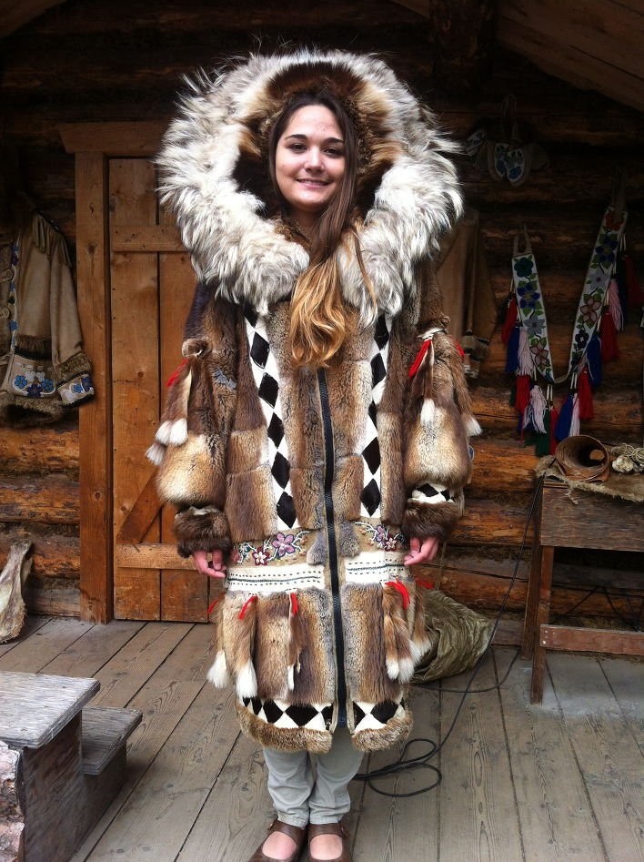

알래스카 전통의상 순록의 모피로 만든 이뉴잇복을 입는다. 이뉴잇복에는 겉옷과 속옷이 있는데 각각 상하로 구분되며, 겉옷은 털을 바깥쪽으로, 속옷은 털을 안쪽으로 하여 입는다. 겉옷의 윗도리에는 늑대의 털로 갓을 댄 후드가 달려 있다. 모두 내한의 필요하여 구조가 이렇게 생긴 것 이다. 신발 · 양말도 순록의 모피로 만드는데 신발은 털을 바깥쪽으로, 양말은 털을 안쪽으로 하고, 신발 바닥은 바다표범의 가죽을 쓰기도 한다. 